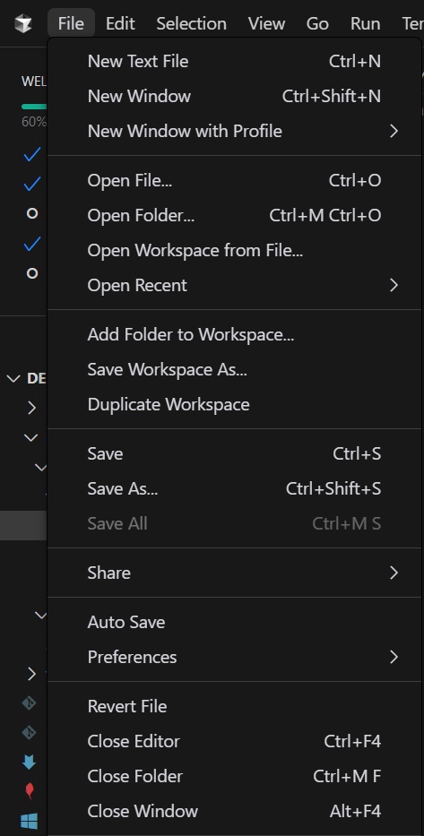
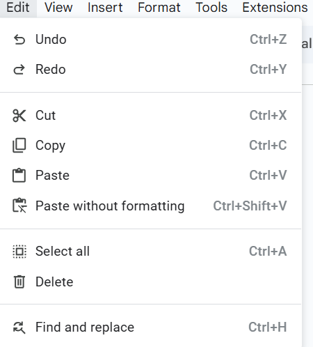
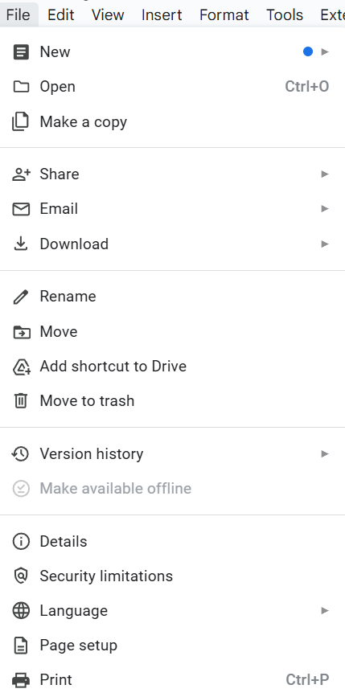
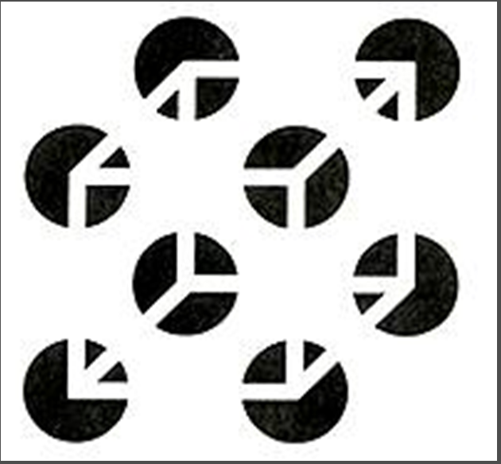

Gestalt Principles
- Proximity - Elements that are close together tend to be perceived as a group.
-
Similarity - Elements that look similar are perceived as being related.



-
Closure - The mind tends to complete incomplete shapes.

- Continuity - Elements arranged in a line or curve are perceived as related.
- Figure-Ground - The mind separates the visual field into foreground and background.